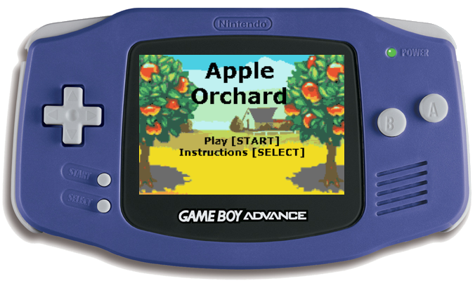

Apple Orchard Game
Game Design & Development
This was a project for my Media Device Architecture class. We learned low-level programming in C and were asked to apply that knowledge to create a game for the Game Boy Advance.
Link to Github repository: GitHub
Objectives
The requirements for the game were mostly pretty open-ended and we were encouraged to be creative. At minimum, we were asked to incorporate the following:
- Original animated sprites and art
- A parallax tiled background
- Menu, instruction, and pause screens
- Sound effects and music
- State machines to control the transition between screens
How to Play
It's apple-picking season, and granny needs your help gathering apples to make her famous apple pies!
- Press the left and right keys to move the basket.
- In order to score points, the player must press [A] to empty the basket of apples. The more apples in the basket, the more points they will get.
0 apples = 0 pts
1 apple = 2 pts
2 apples = 4 pts
3 apples = 8 pts
4 apples = 16 pts
5 apples (full basket) = 50 pts!!Final Product